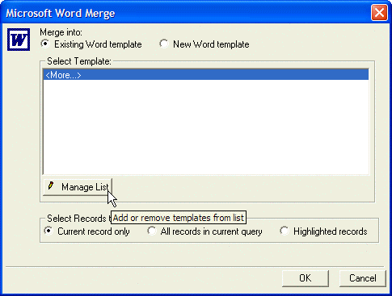
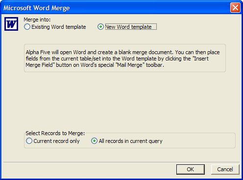
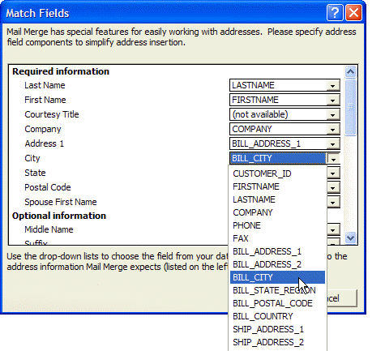
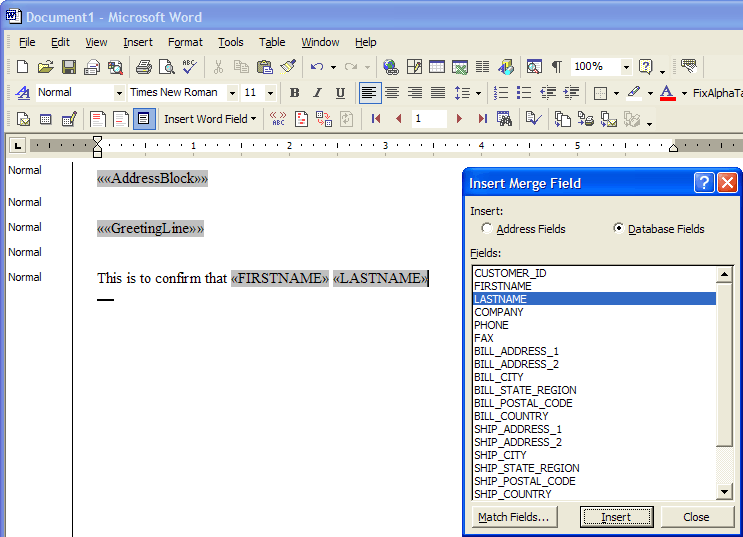
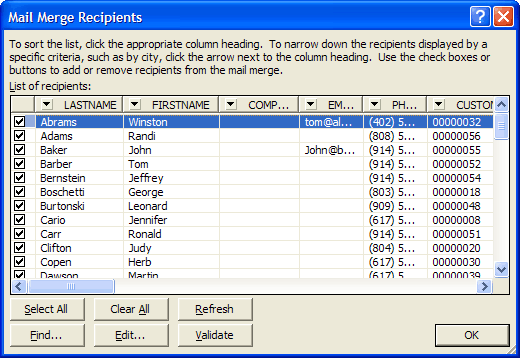
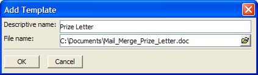
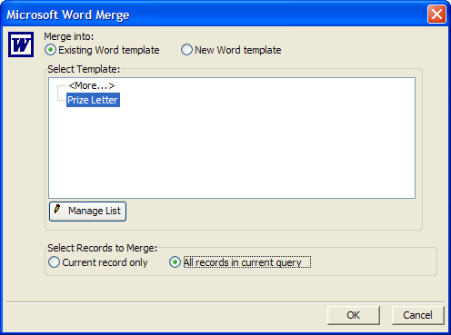
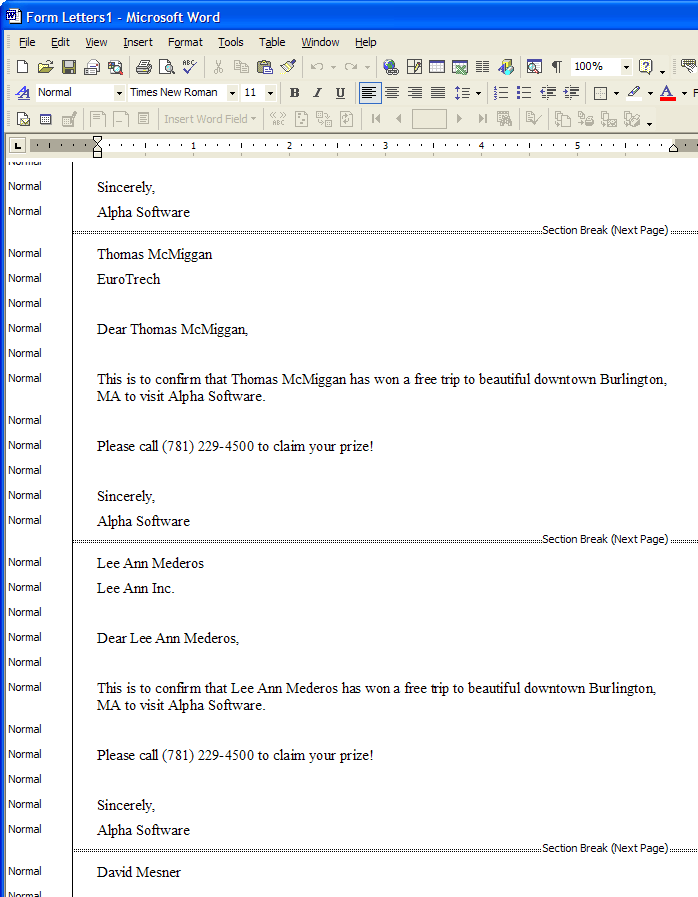

Microsoft Word Integration
While Alpha Anywhere offers a powerful letter writer for creating mail merge Letters, in some instances, you might prefer to generate mail merge Letters using Microsoft Word.
 Note : You can
merge Memo fields, but you cannot merge:
Note : You can
merge Memo fields, but you cannot merge:
RTF Memo fields
JPEG Image fields
Image Reference fields
Calculated fields placed on a form
Creating a Word Template
When viewing a form or browse, click or select Tools > Mail merge with Word to display the Microsoft Word Merge dialog box.

Click New Word Template and OK to open Microsoft Word.

Make sure that all table fields are mapped correctly. Click to display the Match Fields dialog box. For each field in the left-hand column that you want to use, select the table field from the corresponding combo box on the right.

Click OK to return to the process of creating your template.
Enter text and fields from Alpha Anywhere. To place a field in the document, click to display the Insert Merge Field dialog. Select the field from the list box and click Insert. In a similar manner you can click or to insert Address Blocks or Greeting Lines.

If you wish to review, sort, or edit the selected list of records, click to display the Mail Merge Recipients dialog box.

When the template is finished, save it to file, close Microsoft Word, and return to Alpha Anywhere.
Managing a Mail Merge Template
Select Tools > Mail merge with Word to display the Microsoft Word Merge dialog box.
Click Manage List.
Click
 Add Template to display the Add Template dialog box.
Add Template to display the Add Template dialog box.

Enter a name for the template in the Descriptive name field.
Click
 to navigate to and select the new Word
template document.
to navigate to and select the new Word
template document.Click OK > OK to conclude.
Using a Mail Merge Template
Select Tools > Mail merge with Word to display the Microsoft Word Merge dialog box.
Select the template you wish to use.
Select either Current record only or All records in current query.
Click OK to start the merge process.

The resulting Word document will look something like this.

See Also
Consult Microsoft Word documentation for more information.